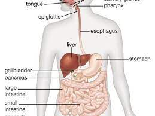
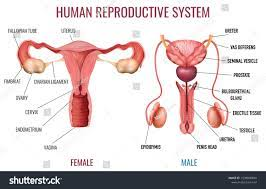
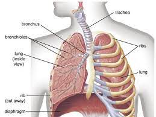

Body System
- Digestive System
- The digestive system includes the mouth, pharynx (throat), esophagus, stomach, small intestine, large intestine, rectum, and anus.
- The digestive system includes the mouth, pharynx (throat), esophagus, stomach, small intestine, large intestine, rectum, and anus.
- Reproductive System
- The tissues, glands, and organs involved in producing offspring (children)
- The tissues, glands, and organs involved in producing offspring (children)
- Respiratory System
- The respiratory system is the network of organs and tissues that help you breathe. It includes your airways, lungs and blood vessels.
- The respiratory system is the network of organs and tissues that help you breathe. It includes your airways, lungs and blood vessels.

observe

learn
